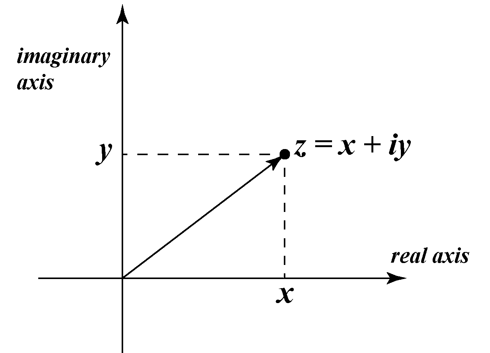
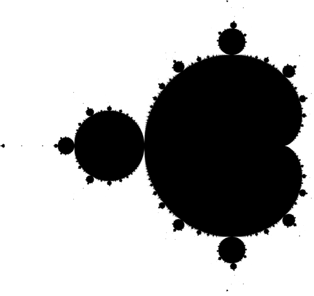

El conjunto Mandelbrot, nombrado por en honor al matemático francés, Benoit B. Mandelbrot, forma parte de una familia de objetos geométricos que hoy conocemos como fractales.
Estos objetos, usualmente referidos como formas infinitamente detalladas se pueden entender mejor a traves de los lentes de la teoria del caos y la dinámica compleja por que es lo que usaremos durante el resto de la expliación.
Números complejos
En la secundaria se nos enseña que las ecuaciones del tipo $$ax^2 + bx + c = 0$$ Tienen 1 o 2 soluciones que se pueden encontrar mediante la formula $$x_1, x_2 = \frac{-b \pm \sqrt{b^2 - 4ac}}{2a}$$ Sin embargo, para ecuaciones como $$x^2 + 1 = 0$$ Nos damos cuenta de que las soluciones son $$x_1, x_2 = \pm \sqrt{-1}$$ Pero esto no puede ser. Elevar al cuadrado siempre dá un número positivo, por lo que no puede existir la raíz cuadrada de -1. Es exactamente para este problema que se inventaron los números complejos.
Llamamos $i$ a la unidad imaginaria y la definimos como $i := \sqrt{-1}$. Los números complejos son la combinación de los números reales (los números que usualmente usamos) con ellos mismos, pero multiplicados por $i$, por ejemplo; $$1+i \;\;\; 0.5 + 2i \;\;\; 0 + \sqrt{2}i$$
Así como los números reales los podemos vizualizar en la recta numérica, se dice que los números imaginarios viven perpendiculares a esta linea y por lo tanto, podemos visualizar los números complejos como si viviesen en un plano cartesiano tal que $$a+bi \to (a,b)$$ A este plano lo llamamos el plano complejo.
Pero, ¿Qué es $\mathcal{M}$?
El conjunto Mandelbrot (comunmente denotado como $\mathcal{M}$), es el conjunto de números complejos, $c$ que no van a infinito al iterar una función $$f_c(z) = z^2 + c$$ empezando desde 0.
Esto se entiende mejor con un ejemplo. Tomemos $c = -1$. Luego, comenzamos nuestra serie de iteraciones con $$it_1 = f_{-1}(0) = 0^2 + -1 = -1$$ Después, $$it_2 = f_{-1}(it_1) = -1^2 + -1 = 0$$ $$it_3 = f_{-1}(it_2) = 0^2 + -1 = -1$$ $$it_4 = f_{-1}(it_3) = -1^2 + -1 = 0$$ $$...$$ Es inmediatamente claro que las iteraciones solo van a alternar entre -1 y 0, como estos números son claramente más pequeños que infinito, decimos que $c=-1$ vive dentro del conjunto Mandelbrot.
Ahora, si tomamos $c=2$, obtenemos $$it_1 = f_{2}(0) = 0^2 + 2 = 2$$ $$it_2 = f {2}(it_1) = 2^2 + 2 = 6$$ $$it_3 = f_{2}(it_2) = 6^2 + 2 = 38$$ $$it_4 = f_{2}(it_3) = 38^2 + 2 = 1446$$ $$...$$ Y de manera igual de clara podemos ver que estas iteraciones crecen indefinidamente, por lo que decimos, van a infinito. Es decir, $c=2$ no vive dentro de $\mathcal{M}$.
En los dos ejemplos anteriores, usamos núemeros de la forma $a+0i$ para simplificar las cuentas, pero haciendo este mismo proceso para todos los numeros complejos, obtendriamos el conjunto completo que conforma $\mathcal{M}$. Aprovechando que los numeros complejos viven en un plano, podemos colorear todos los numeros que pertenecen al conjunto mandelbrot y así, dibujar una imagen como esta:
